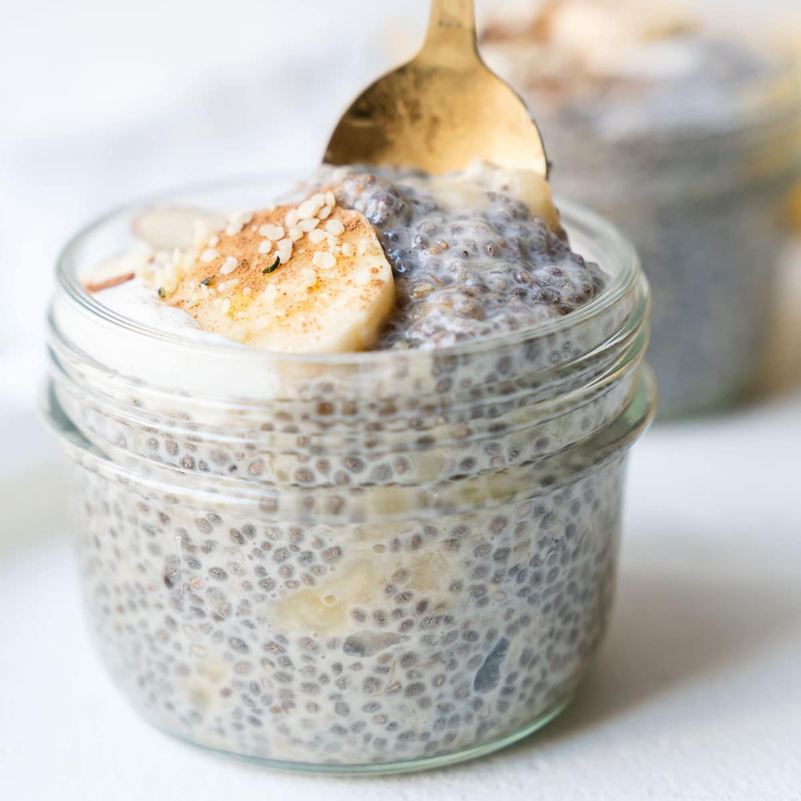

chia pudding

fiber forward feasting
ingredients
- 60 grams chia seeds
- 240 grams milk
30 grams maple syrup
- teaspoon cinnamon
- pinch of salt
instructions
- add chia seeds and milk to mason jar
- add the salt, maple syrup and cinnamon
- refrigerate for at least 4 hours
return home